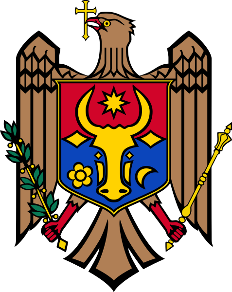

Țară fără ieșire la mare, situată în Europa de Est, între România și Ucraina. Este cunoscută pentru viile și pivnițele sale (precum Cricova și Castel Mimi), pentru mănăstirile rupestre din Orheiul Vechi și pentru o cultură puternic legată de tradițiile agricole și vinificație.
Locații turistice din Republica Moldova:
 |
Țară nordică renumită pentru peisajele sale spectaculoase — fiorduri adânci, munți abrupți și aurora boreală vizibilă în nordul îndepărtat. Are un standard de viață ridicat, o economie bazată pe resurse petroliere și o cultură strâns legată de natură și sporturile de iarnă.
Activități din Norvegia:
| < /td> | ||||
Cea mai mare țară din Scandinavia, cunoscută pentru orașele sale moderne precum Stockholm, pentru designul funcțional (IKEA) și pentru contribuțiile culturale precum muzica ABBA. Suedia îmbină un stil de viață urban avansat cu vaste întinderi de natură sălbatică — păduri, lacuri și coastă.
Activități din Suedia: